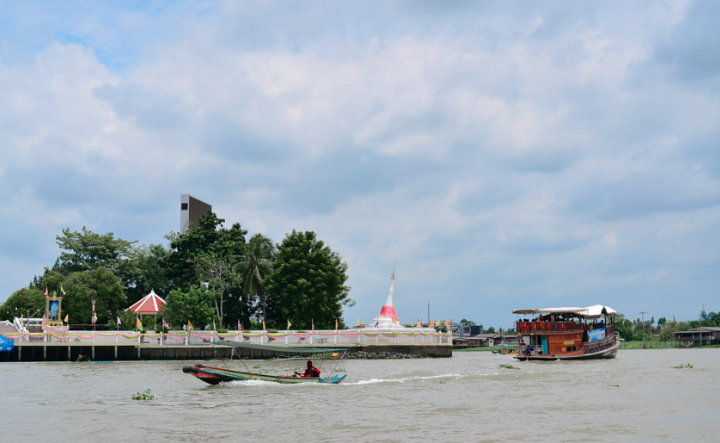
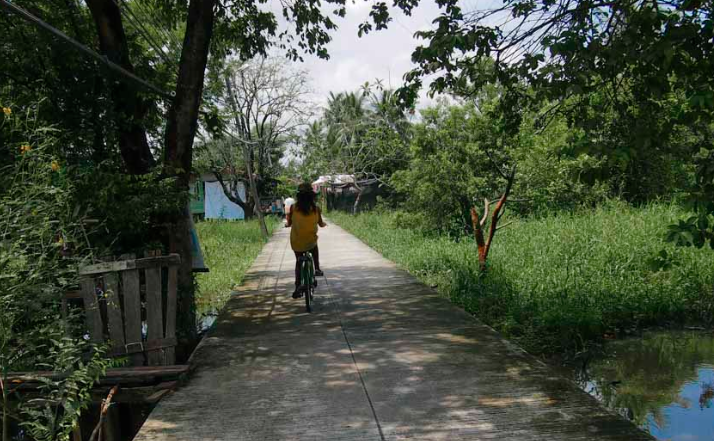
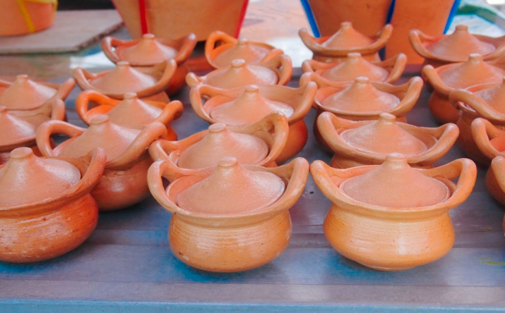
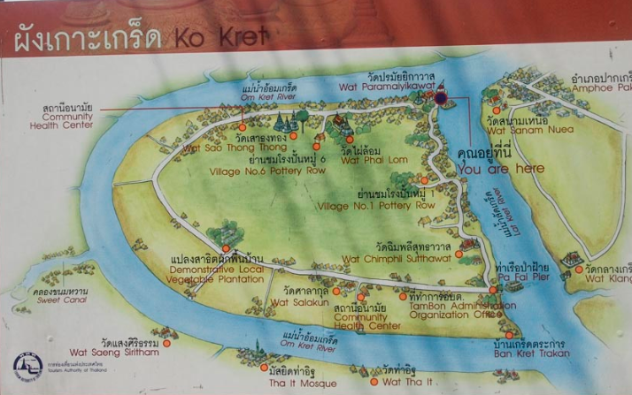
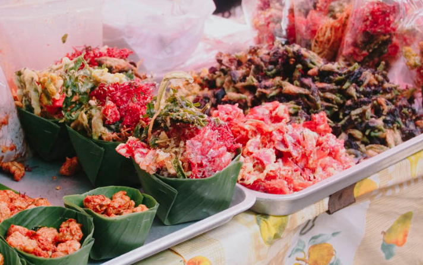
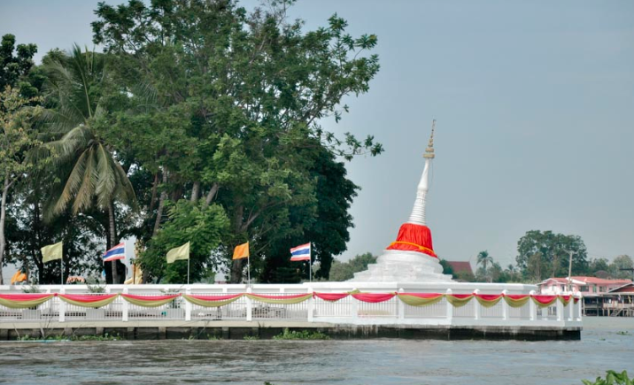
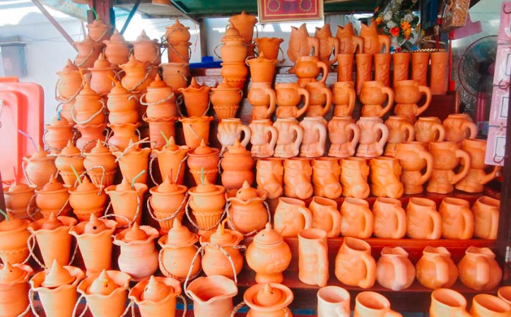
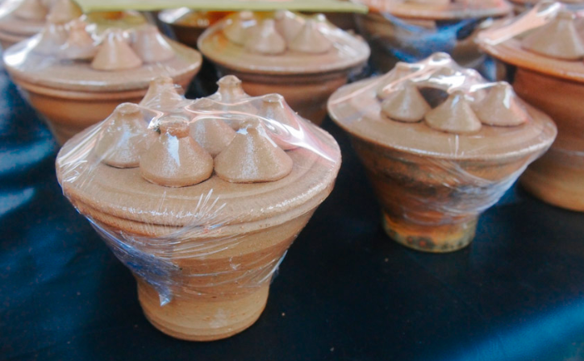

เกาะเกร็ด
เสน่ห์ของเกาะเกร็ดสำหรับเราอยู่ตรงที่ วิธีการเดินทางไป ที่ต้องต่อรถไปลงเรือ จังหวะลมพัดปะทะหน้าตอนอยู่กลางแม่น้ำเจ้าพระยา และ ความเป็นธรรมชาติที่ไม่น่าเชื่อว่าจะอยู่ใกล้กรุงเทพฯ มากขนาดนี้


สำหรับวิธีเที่ยวเกาะเกร็ดแบบมันส์ๆ ล่ะก็ ขอแนะนำให้ ปั่นจักรยานเที่ยวรอบเกาะ ค่าเช่าจักรยานก็ไม่แพงค่ะ 40-50 บาท ทั้งวันต่อคนเท่านั้นเอง แล้วก็ไม่ต้องกลัวหลง เพราะเป็นทางบังคับอยู่แล้ว ปั่นไปทางไหนก็กลับมาหน้าเกาะได้เหมือนเดิม แล้วที่สำคัญก็คือ เราไม่ต้องกลัวกลัวรถใหญ่ด้วย เพราะที่นี่เค้าใช้แค่จักรยาน และ มอเตอร์ไซด์ ในการไปไหนมาไหนกัน

หลังจากลงเรือที่ท่าเรือมา สำหรับโซนด้านหน้าของเกาะเกร็ดนั้นจะเป็นแหล่งท่องเที่ยวที่เป็นร้านขายของน่ารักๆ ให้ได้ช้อปกัน เป็นของทำมือ แฮนด์เมดเป็นส่วนใหญ่ น้ำดื่มใส่ในโอ่งดินเผาดูน่ารักดี และได้ใช้ผลิตภัณฑ์ของชุมชน นอกจากนั้นก็จะมีร้านกาแฟ ร้านขนมไทยโบราณหลายๆ อย่างที่หาทานได้ยากให้เห็น

ของกินไฮไลท์ที่พลาดไม่ได้เลยที่เกาะเกร็ดแห่งนี้ก็คือ ดอกไม้ทอด ต้องบอกว่าแทบจะเป็นสัญลักษณ์ของการมาเกาะเกร็ดเลย ว่าแล้วลองซื้อมาชิมดูสักหน่อย มันๆ กรอบๆ


วัดปรมัยยิกาวาส เมื่อในรัชสมัยของรัชกาลที่ 5 ทรงเห็นว่าวัดปากอ่าวทรุดโทรมมาก จึงโปรดเกล้าฯ ให้ปฏิสังขรณ์วัดใหม่ทั้งวัดโดยรักษารูปแบบมอญไว้ เพื่อถวายเป็นพระราชกุศลสนองพระคุณพระเจ้าบรมมหัยยิกาเธอ กรมสมเด็จพระสุดารัตนราชประยูร ผู้ทรงอภิบาลพระองค์มาแต่ทรงพระเยาว์ และได้พระราชทานนามวัดว่า วัดปรมัยยิกาวาส ซึ่งมีความหมายว่า "วัดของพระบรมอัยยิกา" นั่นเอง

เกาะเกร็ด มีชื่อเสียงในเรื่องของ เครื่องปั่นดินเผามาก เรียกได้ว่าเป็นสินค้า Otop เลย ตั้งแต่ท่าเรือเลย คือพอเดินขึ้นมาก็เจอร้านเครื่องปั้นดินเผาเต็มไปหมด บางร้านไม่ได้ขายเครื่องปั้นดินเผา แต่ขายน้ำสมุนไพน น้ำผลไม้ต่างๆ ก็เอาใส่ในเครื่องปั้นดินเผาของที่นี่ให้นักท่องเที่ยวด้วย เป็นกิมมิกที่น่ารักไม่เบา
ส่วนใครที่คันไม้คันมือ อยากลงมือปั้นดินดู ก็สามารถไปที่ โรงงานดินเผา ซึ่งที่โรงงานจะมีกิจกรรมเวิร์คชอปอยู่แล้ว เราก็ซื้อดินมา 1 ก้อน 50 บาท แล้วลงมือปั้นดินได้เลย ใครไม่ไหวก็จะมีคุณลุงมาคอยช่วยสอนเราอยู่ด้วย
